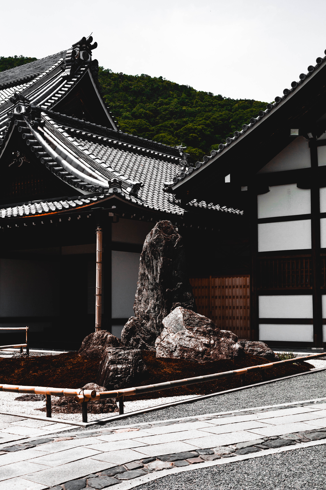
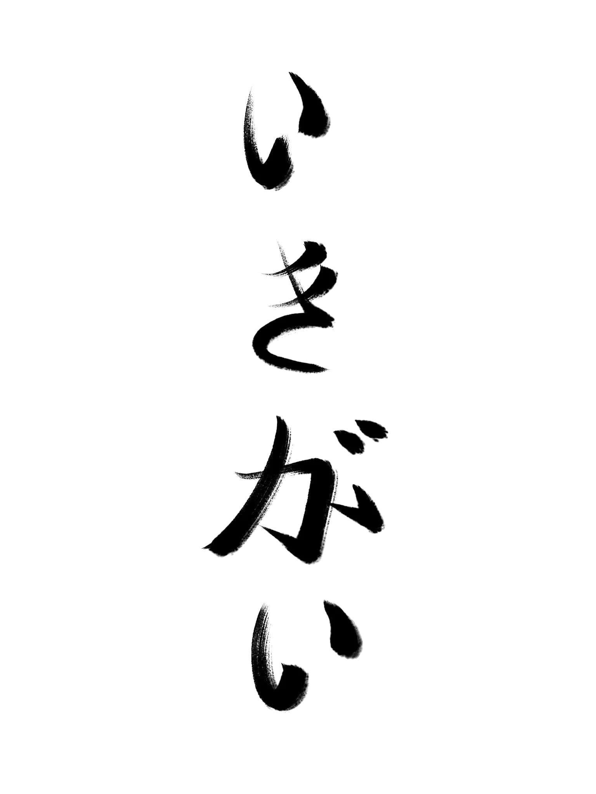

Finding your calling with Ikigai
Ikigai is an ancient Japanese philosophy that helps shape the Japanese people’s ideology in terms of having a complete life. Many research point out the association of Ikigai with expanding longevity and increasing happiness. In general, Ikigai is the intersection of 4 different elements that helps people to identify their purpose in life. This article will explore the undeniable value of this Japanese philosophy and show some techniques or tips people can follow after finding their own Ikigai.

I love you

What is Ikigai?
The Japanese construct Ikigai with the sense of “having a purpose
in life.” Ikigai means “reason for being,” “Iki” means ‘life,’ and
‘gai’ describes ‘value.’ Therefore, finding Ikigai means finding
your calling, what makes you happy, and what makes you want to
live a complete life other than just exist in this world. The
original purpose of Ikigai is to find what makes you blissfully
enjoy your life and is strongly associated with positive health
improvements, including mental and physical health. When this
philosophy reached out to Western populations, people here adapted
it to choose their academic fields or majors to follow and career
paths.